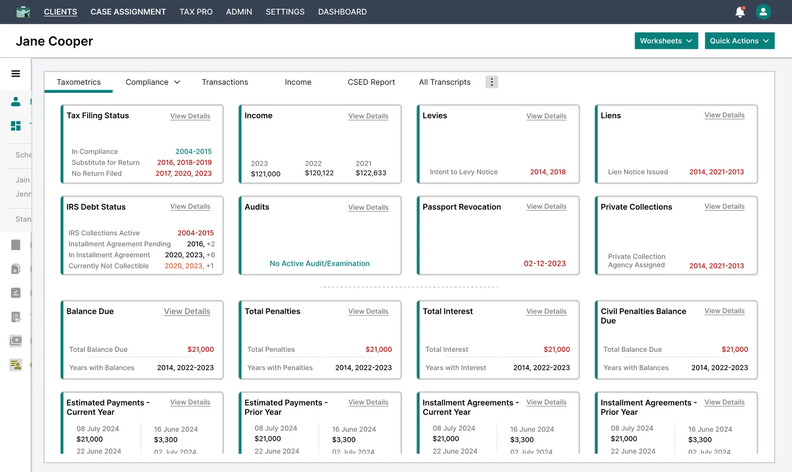
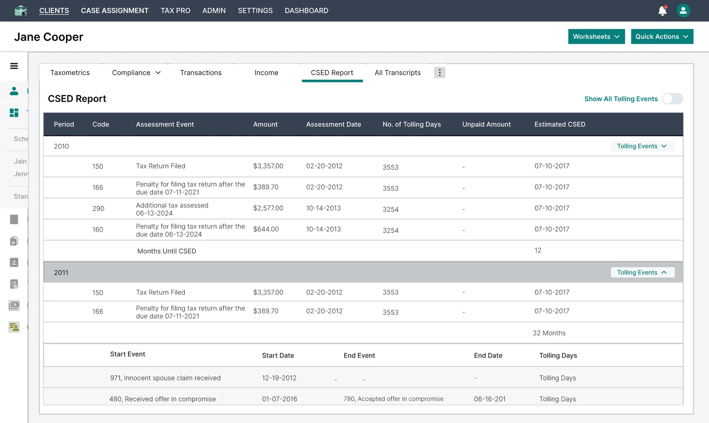
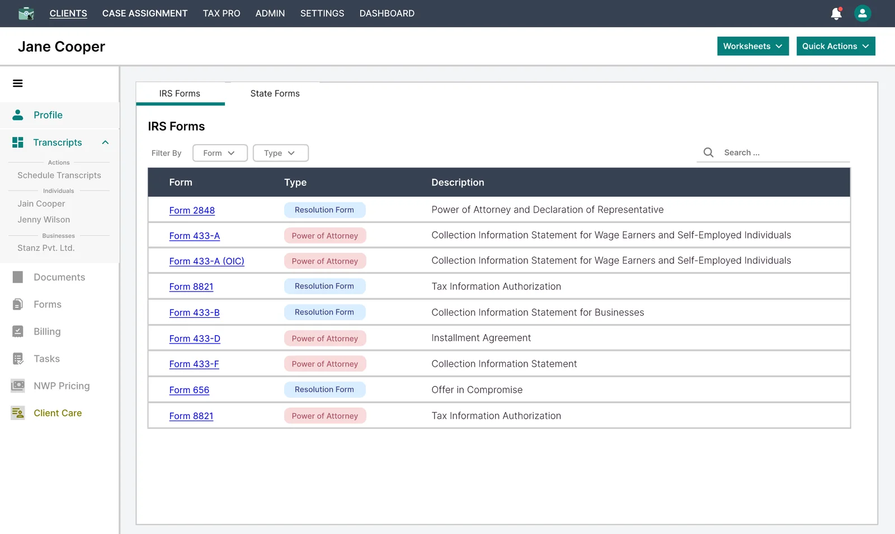
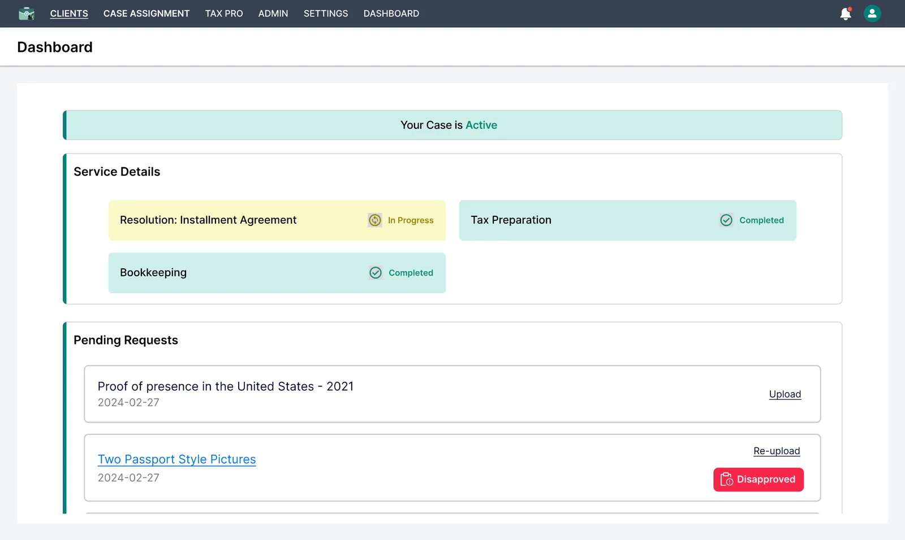
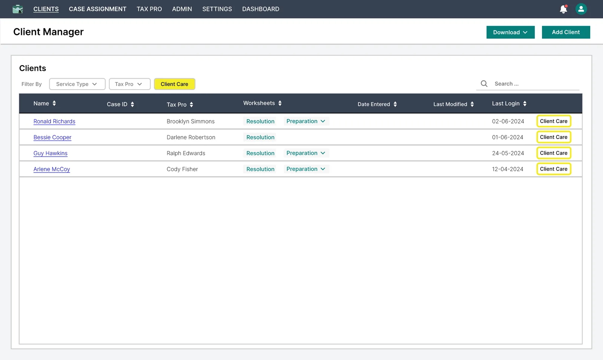
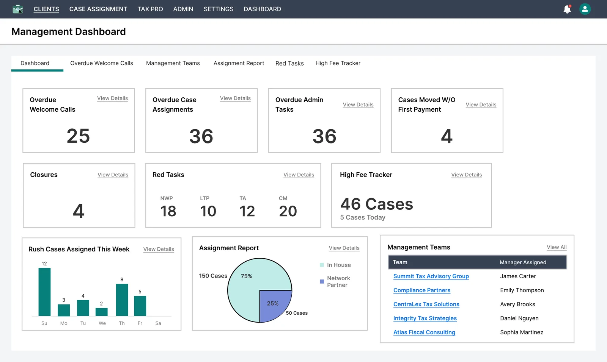
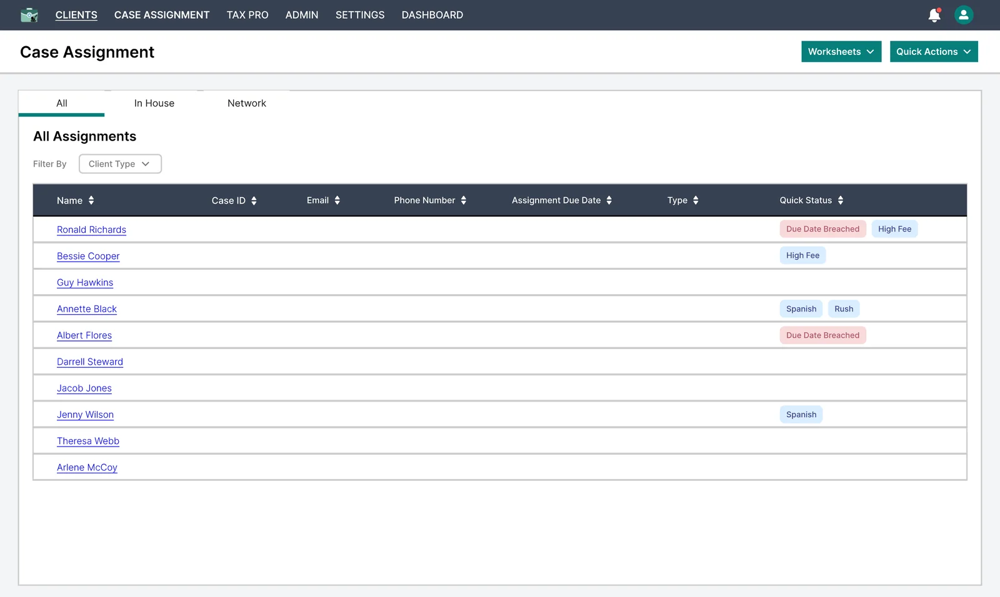
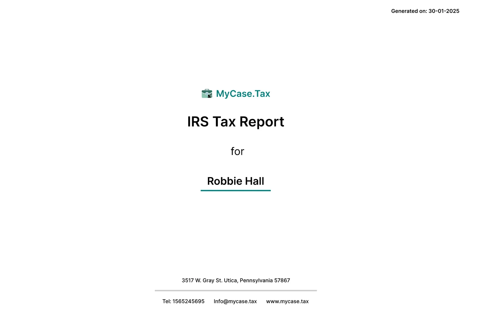

Project overview
Tax resolution practitioners spend hours reading IRS transcripts by hand. The platform pulls them automatically, analyses balances, penalties and collection deadlines across years, models resolution options, pre-fills IRS forms, and gives clients a portal to upload documents and sign.
A cloud web app for enterprise tax practices, CPA firms, tax attorneys and accounting practices. It handles individual, corporate, partnership, employment tax, civil penalty and trust fund recovery cases, and connects to Salesforce, SugarCRM, Dynamics 365, CCH Axcess, Lacerte and Drake.
The platform today
One connected workflow. Data flows in one direction, from the transcript pull to the filed form, without anyone re-entering it.
- 01
Transcript pull
Every IRS transcript type, all available years, from the IRS Transcript Delivery System.
- 02
Taxometrics
Raw transcripts turned into a multi-year analysis: collection deadlines, compliance gaps, penalty relief windows.
- 03
Resolution path
Calculators that show which option fits: full pay, installment agreement, offer in compromise or currently not collectible.
- 04
Worksheets
Guided financial worksheets with IRS standards filled in and equity calculated.
- 05
IRS and state forms
433-A, 433-B, 433-F, 656, 9465, 2848, 8821 and state POAs, pre-filled from one source.
- 06
Client portal
Clients upload documents, answer questionnaires, read a plain-language summary and e-sign.
- 6connected stages, from transcript pull to filed form
- 8+IRS and state forms pre-filled from one data source
- 6case types: individual, corporate, partnership, employment, civil penalty, trust fund
- 6integrations across CRM and tax-prep software
Source: taxvero.com, as of 19 Nov 2026. This describes the product today; my part in it is under What I did.
My role as Business Analyst
Client requirements
Gathered requirements from the client and turned them into BRDs, functional specs and user stories, each traceable back to what the client asked for.
Product design
Designed the prototype and every screen myself in Figma, with no designer on the team.
Managing the team
Ran the backlog, effort estimation and sprint ceremonies (planning, reviews and retrospectives) for a 12-member team.
QA and UAT
Tested every feature against its acceptance criteria before release, and ran UAT with the client.
Change control
Assessed change requests for scope, resourcing and timeline impact before anything entered a sprint.
What I did
- Wrote stories and acceptance criteriaIn a domain where one wrong rule means a wrong tax outcome, and facilitated effort estimation with the team.
- Designed the whole product in Figma145 full-size screens and 35 dialogs: Taxometrics, the CSED report, IRS and state forms, the client portal, case assignment, tasks and the management dashboard. No designer on the team, so the prototype and the hand-off to developers were mine.
- Owned production supportBug reports from real users arrived by email. I reproduced each one, wrote it up as a ticket with steps and priority, worked it through with the developers and confirmed the fix.
- Ran client demo callsWalked the client through each release on demo calls, then turned their feedback into the next round of requirements.
Screens I designed
I designed MyCase.Tax myself in Figma, with no designer on the team: 145 full-size screens and 35 dialogs, from prototype to hand-off. Here are eight of them.








Calls I made
Turn every user email into a ticket
- Context
- Bug reports from real users came in by email, mixed in with everything else.
- Decision
- Log each one as a ticket with the steps to repeat it and how urgent it is, and follow it until it's fixed.
- Why
- No user's problem gets lost in the inbox, and the worst bugs get fixed first.
List the tricky cases up front
- Context
- Tax records are full of exceptions: special codes, balances over many years, and deadlines.
- Decision
- Every story lists its tricky cases as part of its checks, so testers and developers agree on what done means.
- Why
- Fewer surprises in review and fewer bugs reaching users, in a product where mistakes are costly.
Outcome
sprint goal completion across 4+ release cycles with a 12-member team, while real users' bug reports were turned into tickets and resolved.